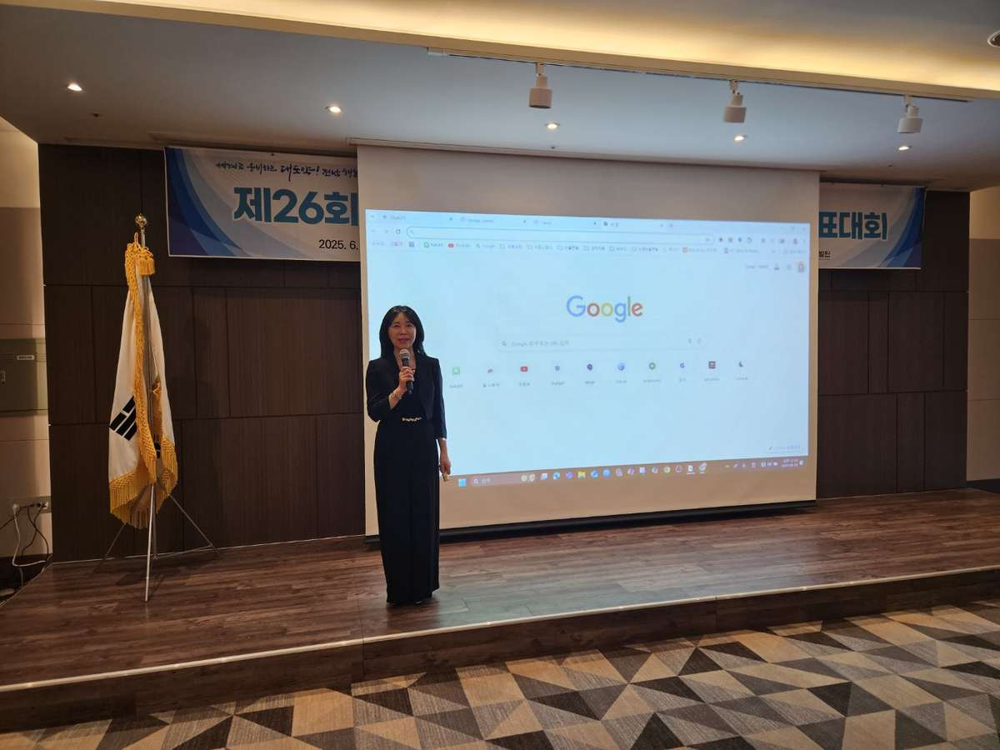
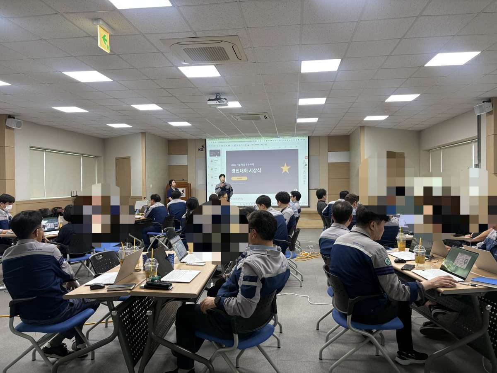
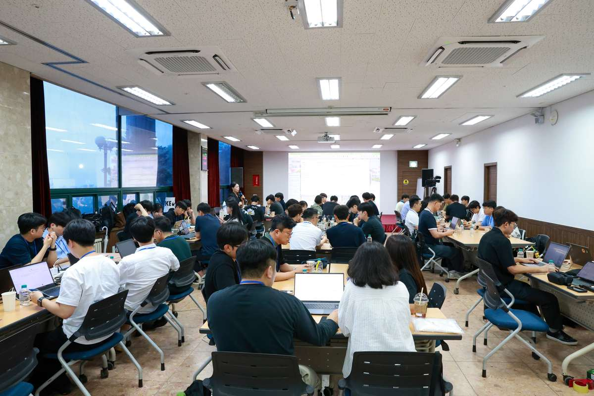
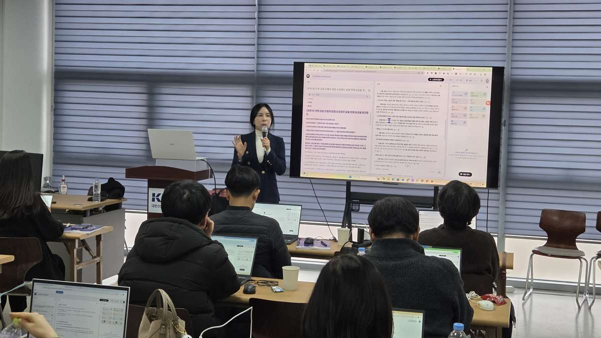
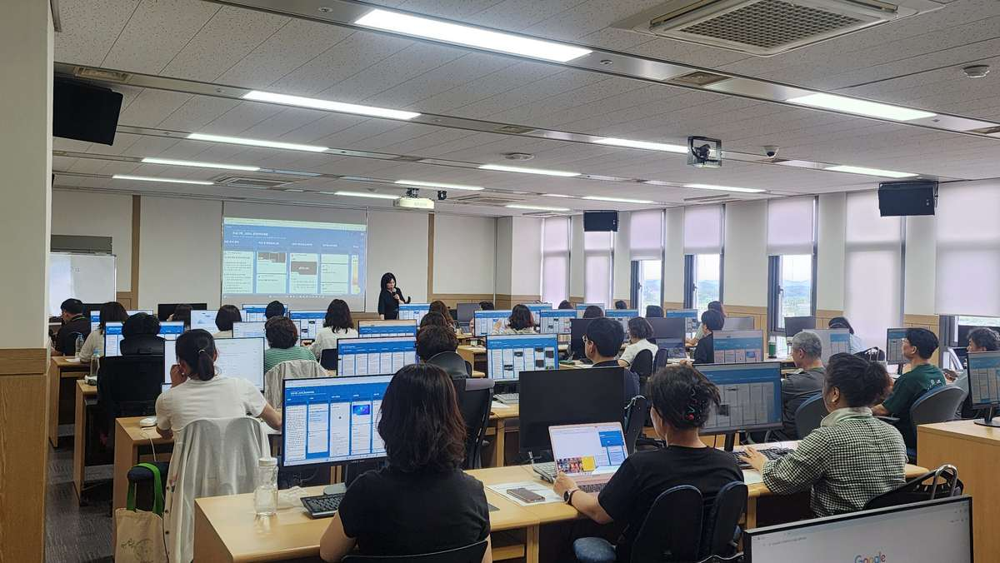

· 업무과제 · 구성원 역량 · AI 활용 수준을 먼저 진단
· 생성형 AI 교육 · 직무별 업무혁신 · 바이브코딩 자동화 · 조직 정착까지 맞춤 설계
· 교육 다음 날 바로 쓰는 프롬프트 · 보고서 · 분석 · 콘텐츠 · 자동화 도구 제작
5분 진단을 완료하면 조직의 현재 단계와 권장 실행방향을 담은 AX 준비도 리포트를 받아볼 수 있습니다.
교육 실적은 2026년 7월 기준으로 집계하며, 공개 가능한 기관과 교육과정만 반영합니다.
대학·정부·지자체·기업의 다양한 현장에서 생성형 AI와 AX 전환 교육을 진행했습니다.
기업·공공기관·대학의 업무과제를 바탕으로 강의, 실습, 토론과 결과물 제작을 함께 진행합니다.






※ 교육 대상과 현장 상황에 따라 커리큘럼과 실습 방식은 맞춤 설계합니다.
직원 간 활용 격차 확대 → 조직 차원의 활용 기준·교육체계 필요
기능 중심 교육은 체험으로 끝남 → 실제 업무자료·부서 과제를 넣어야 현장 적용
사실 오류·출처 누락·개인정보·저작권 위험 존재 → 검증법·보안 기준 함께 교육
보고서 취합·회의록·민원·콘텐츠 등 반복업무 자동화 → 직원은 판단·기획에 집중
우리 조직이 어느 단계인지 먼저 진단해 보세요. → AX 준비도 진단
같은 도구라도 조직마다 문제는 다릅니다.
정해진 커리큘럼 반복 대신, 현재 상태를 분석한 뒤 설계합니다.
AI 경험·주요 업무·반복업무·보안 우려를 사전 진단 → 난이도·실습과제에 반영
일반 예제 대신 실제 보고서·기획안·회의록·정책·민원·데이터 업무로 실습
교육 경험보다 결과물 — 각자 프롬프트·문서·분석·콘텐츠·자동화 도구 완성
AI 답을 그대로 쓰지 않고 출처·사실·수치·개인정보·보안 점검법까지 학습
공용 프롬프트·활용 가이드·자동화 도구·후속 컨설팅으로 정착 지원
어디서 시작할지, 교육만으로 성과가 날지, 조직 수준을 어떻게 확인할지.
보고서·자료정리 시간, 일정하지 않은 품질, 직무별 활용법.
공문·계획서 작성, 정책·민원 분석, 개인정보·보안 우려.
반복 자료취합 축소, 팀 공용 도구, 개발자 채용 부담.
AI 활용 역량, 과제·평가·윤리·저작권 기준, 초보자 참여.
홍보·콘텐츠 시간 부족, 외주비 부담, AI 진입장벽.
ChatGPT·Gemini·Claude·NotebookLM으로 보고서·분석·회의록·기획·커뮤니케이션 업무를 개선하는 직무 맞춤형 실습교육.
보안·개인정보 원칙을 지키며 공문·계획서·정책자료·민원·정책홍보에 AI를 활용하는 현장 중심 교육.
도구 기능보다 도입 우선순위·업무혁신 가능성·리스크·인력 역할 변화·실행 로드맵으로 경영진 판단을 지원.
비개발자가 생성형 AI와 대화하며 자신의 업무 도구를 직접 설계·구현하는 실습형 프로그램.
Human First · AX Design · Implementation
구성원의 AI 활용 경험·자신감·심리적 부담·세대/직급별 격차·보안 우려를 먼저 확인합니다.
부서·직무별 업무를 분석해 AI 지원 업무, 사람 검토 업무, 반드시 사람이 판단할 업무를 구분합니다.
교육생이 실제 산출물과 자동화 도구를 만들고, 조직에서 지속 활용하도록 표준화합니다.
교육대상·인원·직급·업무특성·교육시간·원하는 결과물을 확인합니다.
교육생의 AI 활용 수준과 실제 업무과제를 설문·인터뷰로 확인합니다.
진단 결과로 이론 비중·실습도구·직무별 과제·난이도를 설계합니다.
교육생이 실제 업무를 바탕으로 프롬프트와 산출물을 직접 완성합니다.
실습자료·공용 프롬프트·결과보고서·업무 가이드·자동화 도구를 제공합니다.
필요 시 후속 교육·적용과제·코칭·업무자동화 구축을 연계합니다.
모든 기관에 같은 커리큘럼을 적용하지 않습니다.
조직 상황과 교육생 업무를 먼저 분석한 뒤 가장 필요한 교육과 실습을 설계합니다.
과제 · 기존 AI 교육이 이론·도구 소개에 머물러 실제 업무 적용으로 이어지지 않음.
설계 · 교육생이 자신의 업무과제를 가져와 AI와 대화하며 도구를 직접 만드는 1인 1맞춤 실습.
과제 · AI 도입 검토 중이나 실제 활용 수준·부서별 요구 판단 근거 부족.
설계 · 임직원 사전 설문으로 경험·업무·기대효과·보안 우려 분석, 경영진 보고용 리포트 제작.
과제 · 생성형 AI를 정책이슈 분석·정책홍보 콘텐츠 제작 실무에 연결할 필요.
설계 · 정책자료 분석·핵심 메시지 도출·보도자료·카드뉴스를 기초·심화 과정으로 구성.
과제 · 부서별 업무가 달라 공통 커리큘럼만으로는 현장 적용이 어려움.
설계 · 사전 설문으로 부서별 업무를 확인하고 직무별 미션카드를 제작.
“AI가 어렵고 코딩은 더 낯설었는데, 직접 제 업무를 가지고 해보니 훨씬 쉬웠습니다.
끝난 뒤에도 바로 활용할 수 있겠다는 자신감이 생겼습니다.”
“단순히 기능을 소개하는 교육이 아니라 우리 부서에서 실제로 하는 업무를 기준으로 실습해서 활용도가 높았습니다.”
“AI가 만든 결과를 그대로 쓰는 게 아니라 확인하고 수정하는 방법까지 배울 수 있어 실무에 도움이 됐습니다.”
“AI에 어떻게 질문해야 하는지 막막했는데, 업무를 단계별로 나누고 프롬프트를 만드는 방법을 이해하게 됐습니다.”
후기는 실제 교육 설문·참여자 의견 중 공개 동의를 받은 내용만 사용합니다.
단순한 기능 시연보다 교육생의 실제 변화와 교육 이후의 활용을 중요하게 생각합니다.
배미주 박사 이력과 활동 보기교육대상과 업무가 다르면 필요한 교육도 달라야 합니다.
현재 조직의 AI 활용 수준과 해결하고 싶은 업무과제를 알려주시면 적합한 교육방향과 과정을 제안해 드립니다.
전화 010-6398-5354 · 이메일 orthia66@gmail.com · 영업일 기준 1일 이내 회신